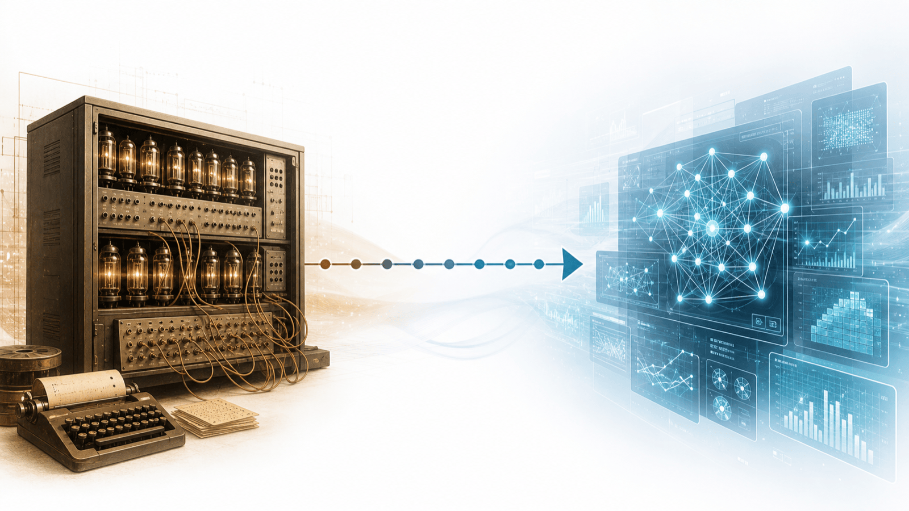
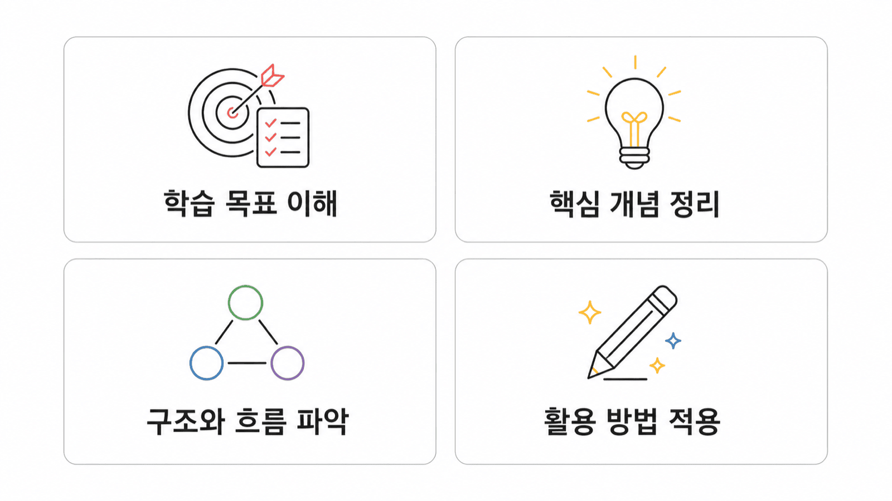
도구의 효과는 목표·학습자·과제·피드백·접근성 조건에 따라 달라진다.
교재 2장 1절: 기술은 교육을 대신하지 않는다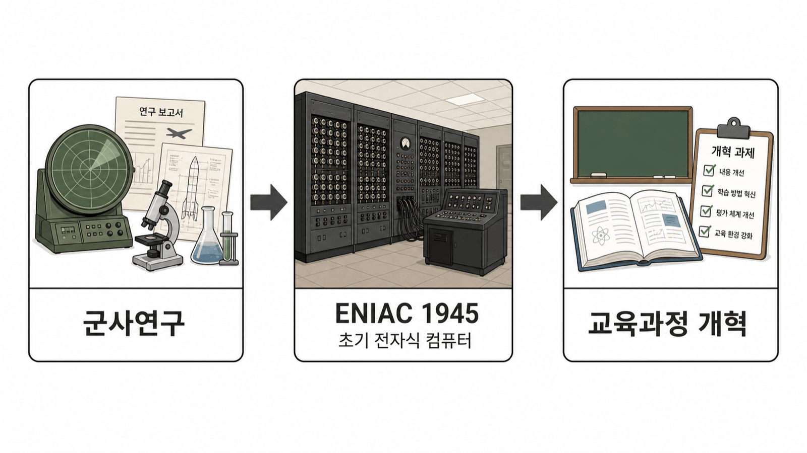
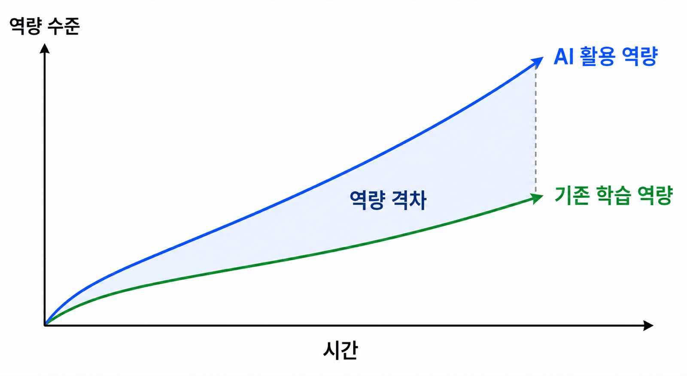
튜링·다트머스·퍼셉트론을 통해 지능을 단순화하지 않는 설계 태도를 살핀다.
교재 2장 2절: 인공지능이라는 이름이 만들어진 자리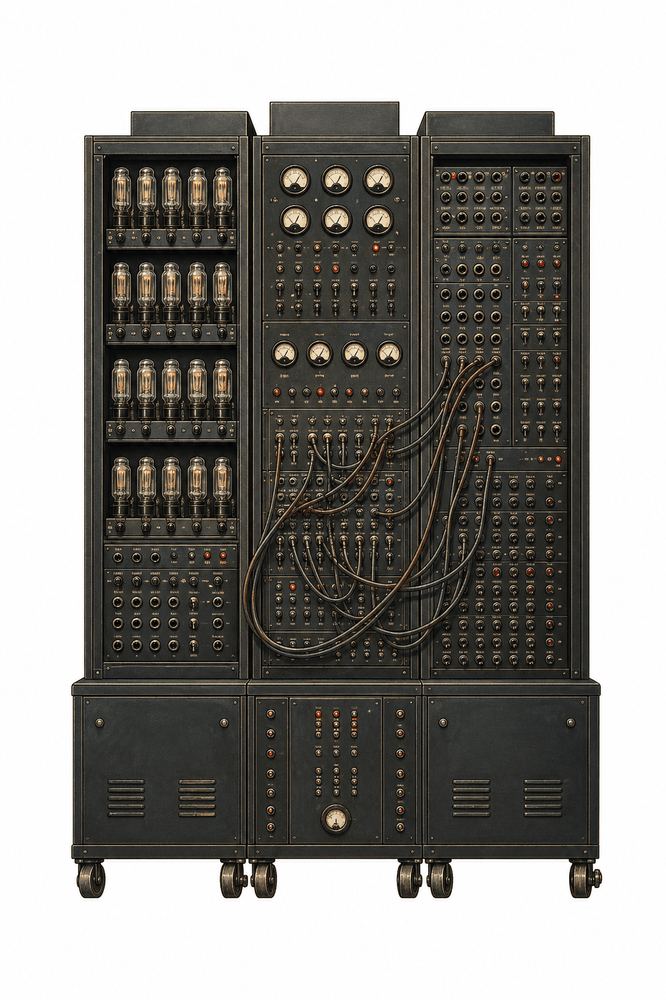
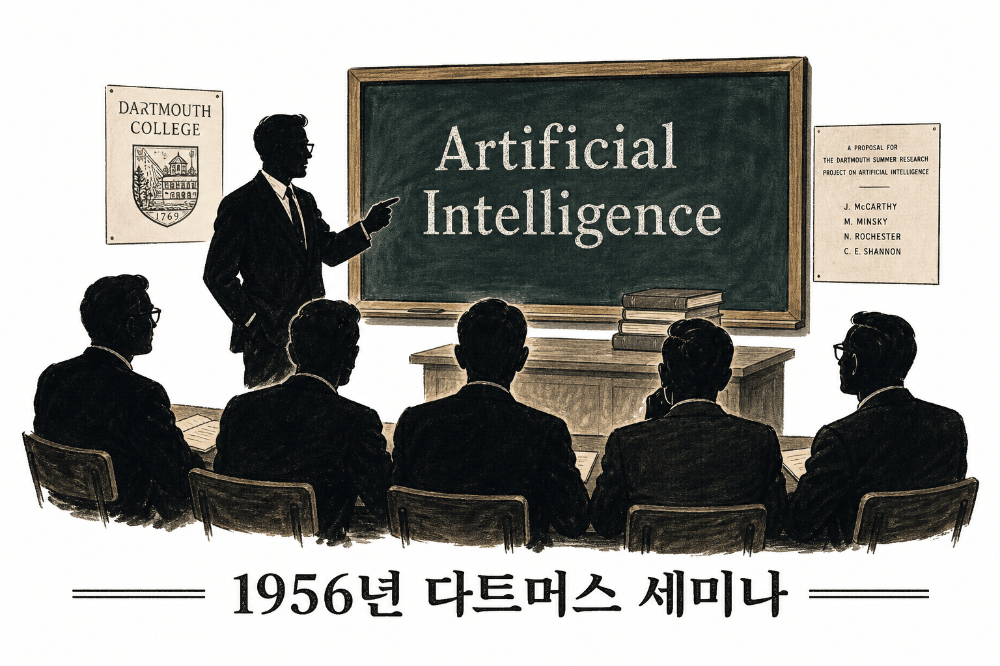
| 전환점 | 모델이 보여 준 가능성 | 교사가 확인할 한계와 질문 |
|---|---|---|
| 퍼셉트론(1958) | 정보가 저장되고 조직되는 방식을 확률적 모델로 설명하려는 시도 | 오늘날의 신경망과 같지는 않으며, 특정 모델의 성능을 일반화할 수 없다. |
| Perceptrons(1969) | 퍼셉트론을 계산기하학 관점에서 엄밀하게 다루었다. | 한계를 드러내는 비판은 모델을 버리라는 뜻이 아니라 조건을 따져 보라는 요청이다. |
| 수업 설계 | 자동 채점·추천·질의응답은 일부 과제를 지원할 수 있다. | 출력이 학생의 사고 과정을 충분히 설명한다고 가정하지 않는다. |
| 교사의 역할 | 도구가 잘하는 일과 못하는 일을 구분한다. | 학생이 왜 그런 답을 만들었는지 해석하고 이유 설명을 확인한다. |
→ 이 논쟁의 핵심은 누가 이겼는지가 아니라, 모델의 가능성과 한계를 함께 읽는 태도다.
자료가 많아진 만큼 검색·출처 검증·연결의 책임도 학습의 기본 조건이 되었다.
교재 2장 4절: 웹은 정보 접근의 조건을 바꾸었다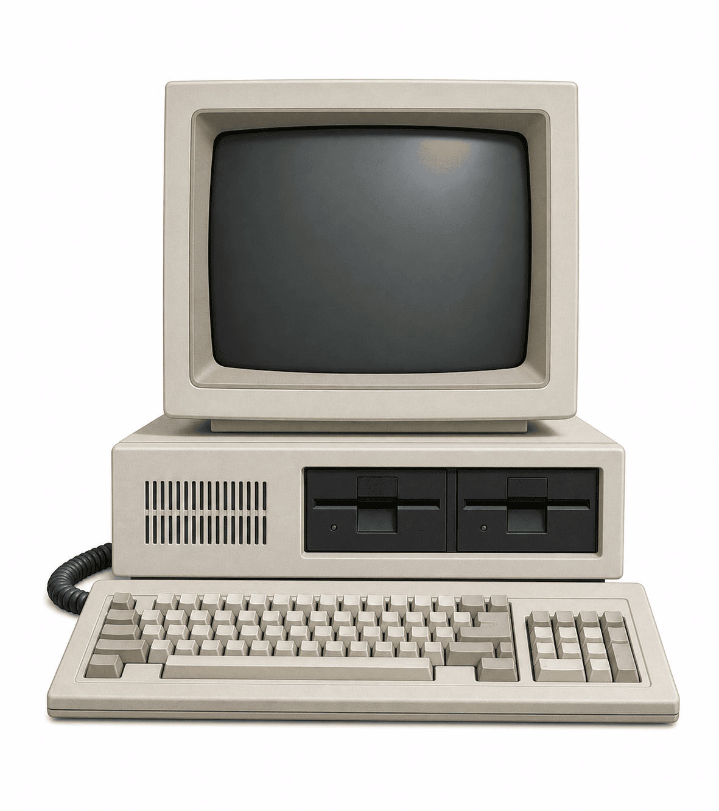
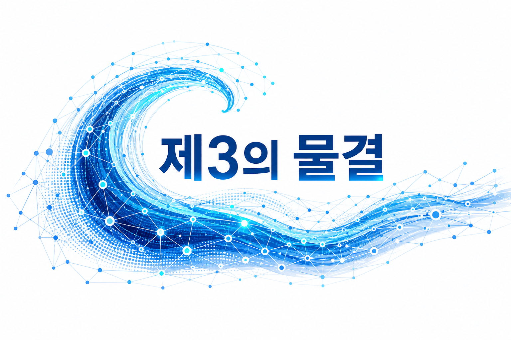
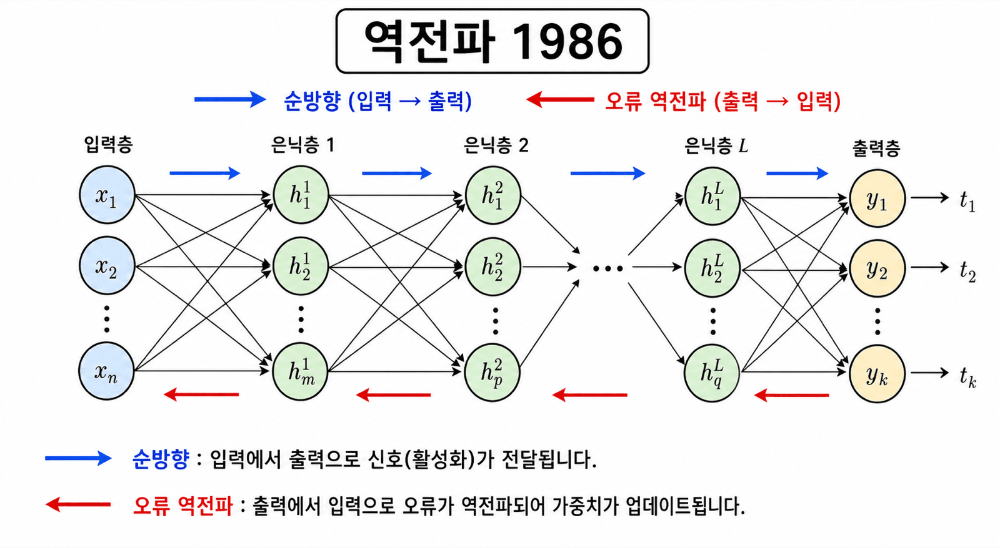
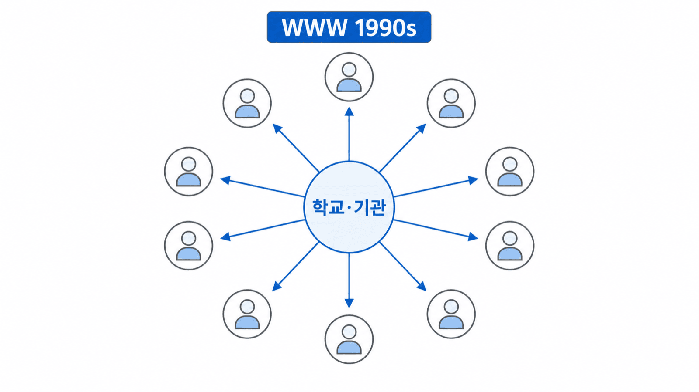
플랫폼을 여는 일보다 접속·참여·피드백·대체 경로를 설계하는 일이 중요하다.
교재 2장 5절: 원격학습의 가능성과 격차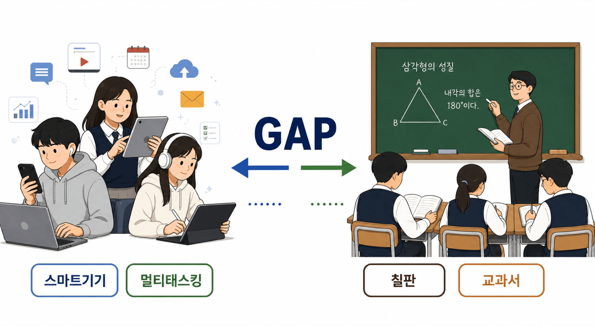
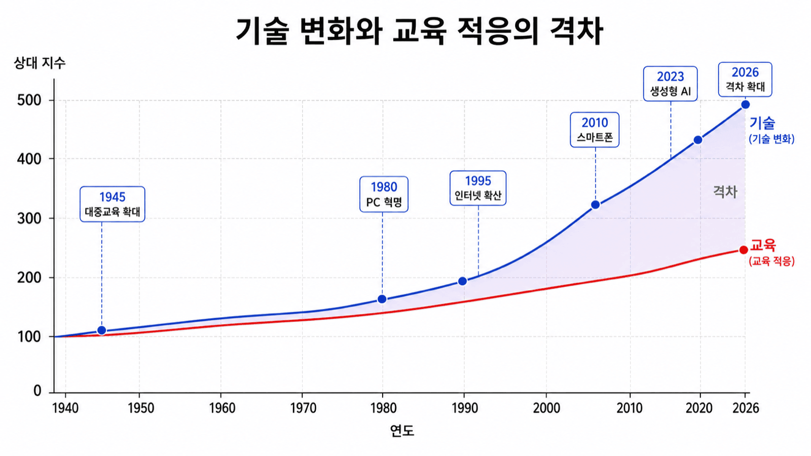
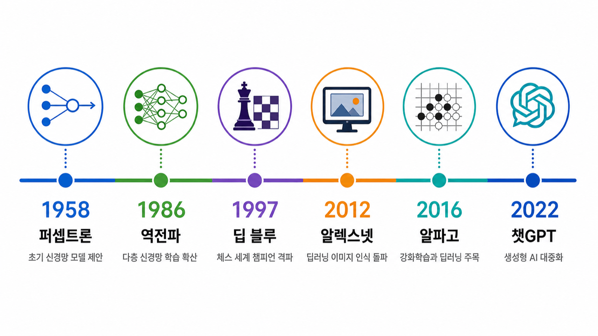
출력 자체가 아니라 출처·수정 이유·학생의 판단과 책임을 평가 증거로 삼는다.
교재 2장 6절: 생성형 AI와 평가·지식 검증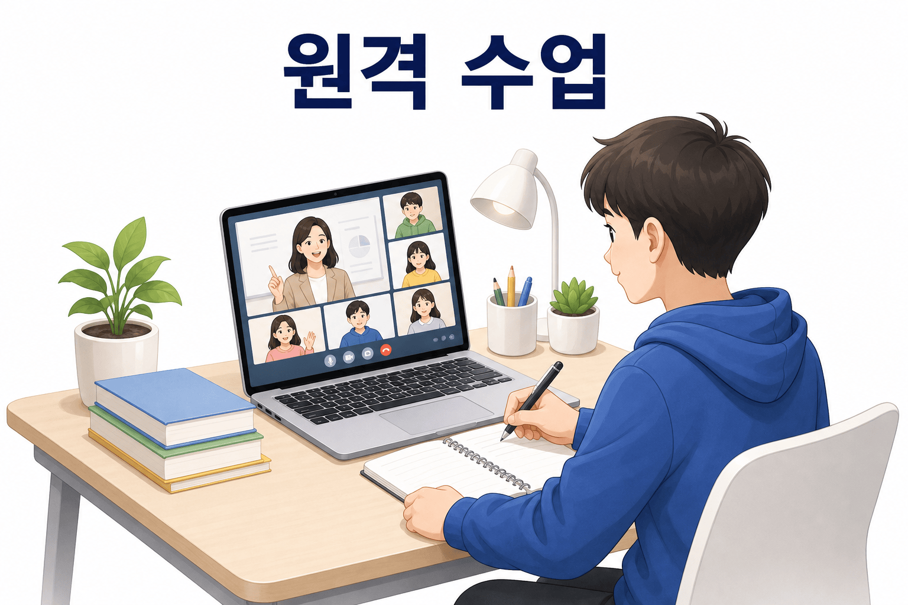
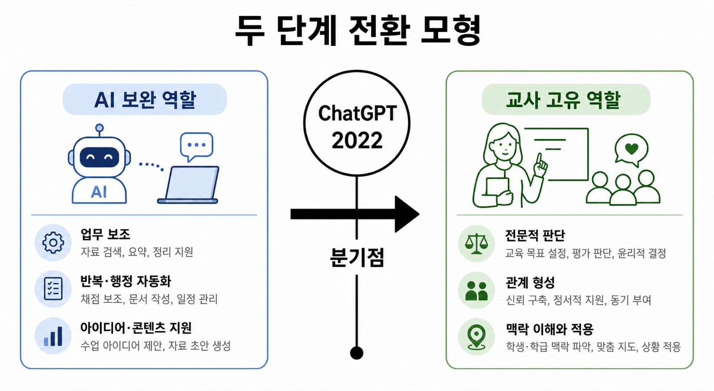
기술은 항상 먼저 변했다.
교사는 먼저 이해하는 사람이어야 한다.
| 저자(연도) | 제목 · 출처 |
|---|---|
| Goldin, C., & Katz, L. F. (2008) | The Race between Education and Technology. Harvard University Press. |
| Prensky, M. (2001) | Digital Natives, Digital Immigrants. On the Horizon, 9(5), 1–6. |
| Toffler, A. (1980) | The Third Wave. Bantam Books. |
| Schwab, K. (2016) | The Fourth Industrial Revolution. World Economic Forum. |
| Rumelhart, D. E., Hinton, G. E., & Williams, R. J. (1986) | Learning representations by back-propagating errors. Nature, 323, 533–536. |
| 저자(연도) | 제목 · 출처 |
|---|---|
| Toffler, A. (1970) | Future Shock. Random House. |
| Minsky, M., & Papert, S. (1969) | Perceptrons: An Introduction to Computational Geometry. MIT Press. |
| 교육부 (2022, 12월 22일) | 2022 개정 교육과정 확정·발표. 교육부. |
| 교육부 (2023, 2월) | 디지털 기반 교육혁신 방안. 교육부. |
| 류지헌, 김민정, 임태형 (2023) | 『수업역량 강화를 위한 교육방법 및 교육공학』 (1판 2쇄). 학지사. |